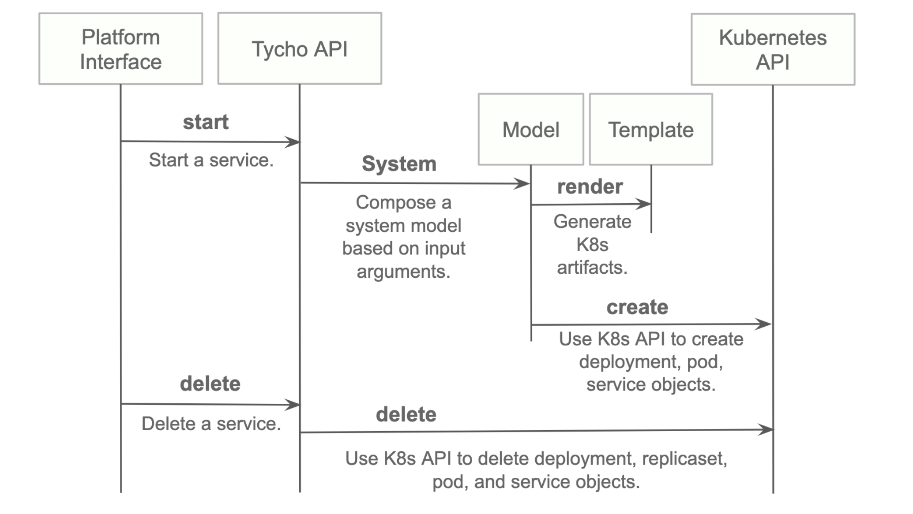
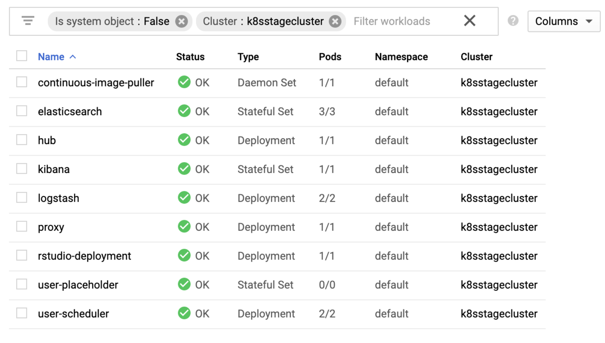
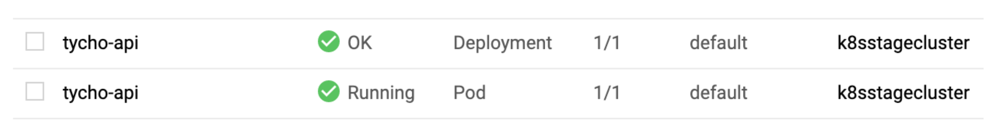
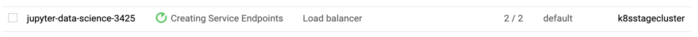
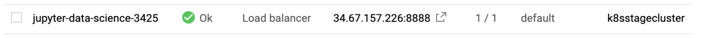
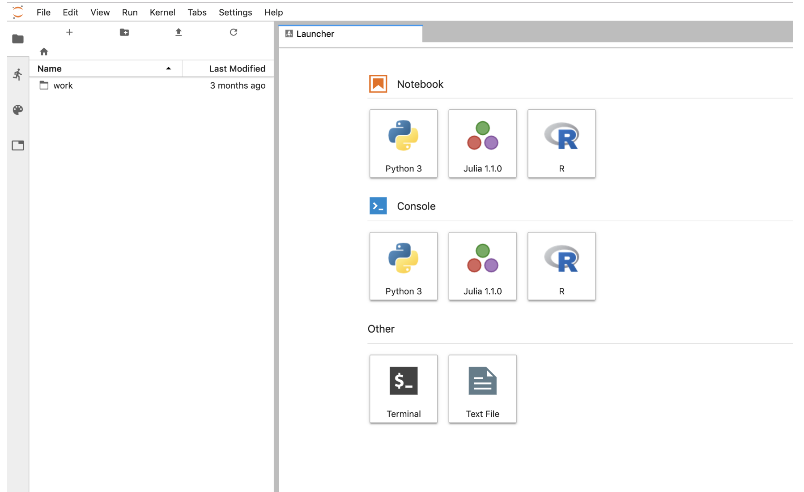

HeLx Framework Overview¶
Tycho¶
Tycho is an API, compiler, and executor for cloud native distributed systems.
A subset of docker-compose is the system specification syntax.
Kubernetes is the first supported orchestrator.
The Helm chart for deploying Tycho can be found here.
Goals¶
Application Simplity: The Kubernetes API is reliable, extensive, and well documented. It is also large, complex, supports a range of possibilities greater than many applications need, and often requires the creation and control of many objects to execute comparatively simple scenarios. Tycho bridges the simplicity of Compose to the richness of the Kubernetes’ architecture.
Microservice: We wanted an end to end Python 12-factory style OpenAPI microservice that fits seamlessly into a Python ecosystem (which is why we did not use the excellent Kompose tool as a starting point).
Lifecycle Management: Tycho treats distributed systems as programs whose entire lifecycle can be programmatically managed via an API.
Pluggable Orchestrators: The Tycho compiler abstracts clients from the orchestrator. It creates an abstract syntax tree to model input systems and generates orchestrator specific artifacts.
Policy: Tycho now generates network policy configurations governing the ingress and egress of traffic to systems. We anticipate generalizing the policy layer to allow security and other concerns to be woven into a deployment dynamically.
Partnering Technologies¶
This work relies on these foundations:
PIVOT: A cloud agnostic scheduler with an API for executing distributed systems.
Kubernetes: Widely deployed, highly programmable, horizontally scalable container orchestration platform.
Kompose: Automates conversion of Docker Compose to Kubernetes. Written in Go, does not provide an API. Supports Docker Compose to Kubernetes only.
Docker: Pervasive Linux containerization tool chain enabling programmable infrastructure and portability.
Docker-compose: Syntax and tool chain for executing distributed systems of containers.
Docker Swarm: Docker only container orchestration platform with minimal adoption.
Quick Start¶
samples/jupyter-ds/docker-compose.yaml:
---
# Docker compose formatted system.
version: "3"
services:
jupyter-datascience:
image: jupyter/datascience-notebook
entrypoint: start.sh jupyter lab --LabApp.token=
ports:
- 8888:8888
In one shell, run the API:
$ export PATH=~/dev/tycho/bin:$PATH
$ tycho api --debug
In another, launch three notebook instances.
$ export PATH=~/dev/tycho/bin:$PATH
$ tycho up -f sample/jupyter-ds/docker-compose.yaml
SYSTEM GUID PORT
jupyter-ds 909f2e60b83340cd905ae3865d461156 32693
$ tycho up -f sample/jupyter-ds/docker-compose.yaml
SYSTEM GUID PORT
jupyter-ds 6fc07ab865d14c4c8fd2d6e0380b270e 31333
$ tycho up -f sample/jupyter-ds/docker-compose.yaml
SYSTEM GUID PORT
jupyter-ds 38f01c140f0141d9b4dc1baa33960362 32270
Then make a request to each instance to show it’s running. It may take a moment for the instances to be ready, especially if you’re pulling a container for the first time.
$ for p in $(tycho status | grep -v PORT | awk '{ print $4 }'); do
url=http://$(minikube ip):$p; echo $url; wget -q -O- $url | grep /title;
done
http://192.168.99.111:32270
<title>JupyterLab</title>
http://192.168.99.111:31333
<title>JupyterLab</title>
http://192.168.99.111:32693
<title>JupyterLab</title>
Delete all running deployments.
$ tycho down $(tycho status --terse)
38f01c140f0141d9b4dc1baa33960362
6fc07ab865d14c4c8fd2d6e0380b270e
909f2e60b83340cd905ae3865d461156
And show that they’re gone.
$ tycho status
None running
Architecture¶
Install¶
Install python 3.7.x or greater.
Create a virtual environment.
Install the requirements.
Start the server.
python3 -m venv environmentName
source environmentName/bin/activate
pip install -r requirements.txt
export PATH=<tycho-repo-dir>/bin:$PATH
tycho api
Usage - A. Development Environment Next to Minikube¶
This mode uses a local minikube instance with Tycho running outside of Minikube. This is the easiest way to add and test new features quickly.
Run minikube:
minikbue start
Run the minikube dashboard:
minikube dashboard
Run the Tycho API:
cd tycho
PYTHONPATH=$PWD/.. python api.py
Launch the Swagger interface http://localhost:5000/apidocs/
Use the Tycho CLI client as shown above or invoke the API.
Usage - B. Development Environment Within Minikube¶
When we deploy Tycho into Minikube it is now able to get its Kubernetes API configuration from within the cluster.
In the repo’s kubernetes directory, we define deployment, pod, service, clusterrole, and clusterrolebinding models for Tycho. The following interaction shows deploying Tycho into Minikube and interacting with the API.
We first deploy all Kubernetes Tycho-api artifacts into Minkube:
(tycho) [scox@mac~/dev/tycho/tycho]$ kubectl create -f ../kubernetes/
deployment.extensions/tycho-api created
pod/tycho-api created
clusterrole.rbac.authorization.k8s.io/tycho-api-access created
clusterrolebinding.rbac.authorization.k8s.io/tycho-api-access created
service/tycho-api created
Then we use the client as usual.
Usage - C. Within Google Kubernetes Engine from the Google Cloud¶
Shell¶
Starting out, Tycho’s not running on the cluster:
First deploy the Tycho API
$ kubectl create -f ../kubernetes/
deployment.extensions/tycho-api created
pod/tycho-api created
clusterrole.rbac.authorization.k8s.io/tycho-api-access created
clusterrolebinding.rbac.authorization.k8s.io/tycho-api-access created
service/tycho-api created
Here we’ve edited the Tycho service def to create the service as type:LoadBalancer for the purposes of a command line demo. In general, we’ll access the service from within the cluster rather than exposing it externally.
That runs Tycho:
Initialize the Tycho API’s load balancer IP and node port.
$ lb_ip=$(kubectl get svc tycho-api -o json | jq .status.loadBalancer.ingress[0].ip | sed -e s,\",,g)
$ tycho_port=$(kubectl get service tycho-api --output json | jq .spec.ports[0].port)
Launch an application (deployment, pod, service). Note the --command
flag is used to specify the command to run in the container. We use this
to specify a flag that will cause the notebook to start without
prompting for authentication credentials.
$ PYTHONPATH=$PWD/.. python client.py --up -n jupyter-data-science-3425 -c jupyter/datascience-notebook -p 8888 --command "start.sh jupyter lab --LabApp.token='
'"
200
{
"status": "success",
"result": {
"containers": {
"jupyter-data-science-3425-c": {
"port": 32414
}
}
},
"message": "Started system jupyter-data-science-3425"
}
Refreshing the GKE cluster monitoring UI will now show the service starting:
Then running:
Get the job’s load balancer ip and make a request to test the service.
$ job_lb_ip=$(kubectl get svc jupyter-data-science-3425 -o json | jq .status.loadBalancer.ingress[0].ip | sed -e s,\",,g)
$ wget --quiet -O- http://$job_lb_ip:8888 | grep -i /title
<title>Jupyter Notebook</title>
From a browser, that URL takes us directly to the Jupyter Lab IDE:
And shut the service down:
$ PYTHONPATH=$PWD/.. python client.py --down -n jupyter-data-science-3425 -s http://$lb_ip:$tycho_port
200
{
"status": "success",
"result": null,
"message": "Deleted system jupyter-data-science-3425"
}
This removes the deployment, pod, service, and replicasets created by the launcher.
Client Endpoint Autodiscovery¶
Using the command lines above without the -s flag for server will
work on GKE. That is, the client is created by first using the K8s API
to locate the Tycho-API endpoint and port. It builds the URL
automatically and creates a TychoAPI object ready to use.
client_factory = TychoClientFactory ()
client = client_factory.get_client ()